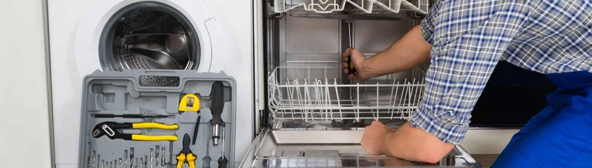

Подключение посудомоечной машины

Подключение посудомойки совершенно не похоже на подключение другой техники
Подключение посудомойки совершенно не похоже на подключение другой техники, которую можно просто извлечь
из коробки, подключить к розетке и наслаждаться всеми радостями жизни.
Каждая модель посудомоечной машины имеет свои особенности и осуществить подключение самостоятельно, без
знания всех тонкостей этого процесса, вряд ли удастся.
Даже если это обычная модель, то вызвать мастера точно не будет лишним. Подключение посудомойки схоже с
процессом подключения стиральной машины, отличаются лишь некоторые детали.
В любом случае, перед вызовом мастера вам необходимо самостоятельно решить вопросы, связанные, например,
с местом установки. При необходимости, сантехник может проинструктировать вас на месте.
В этом случае, мастеру останется только осуществить подключение посудомоечной машины к канализации и
водопроводу.
Что нужно учитывать
Прежде всего, надо понимать, что для установки посудомойки можно выбрать любое место на кухне. Необходимые
трубки воды и слива всегда можно нарастить в длине, чтобы установить и выполнить подключение посудомойки
там, где это будет удобно.
С другой стороны, наиболее правильным решением будет выбрать место для установки вблизи места подключения
посудомойки к водопроводу. Всё дело в том, что насос агрегата имеет ограниченные возможности.
Удлинение труб слива и подвода воды будет только усложнять работу этого насоса, лишний раз нагружая его и
вынуждая работать на повышенной мощности. Поэтому установка посудомойки непосредственно возле места вреза в
систему, обеспечит максимальную разгрузку работы насоса.
Следующий момент, который обязательно необходимо учитывать при выборе места – это особенности вывода
электропровода посудомойки. Дело в том, что для упрощения изгиба и предотвращения излома провода,
производители зачастую делают провод посудомойки изогнутым непосредственно возле корпуса.
Установка агрегата нередко выполняется почти вплотную к стене, а это чревато изломом провода прямо на выходе
из корпуса. Такая поломка потребует разбора посудомойки для замены провода и устранения проблемы.
Важным является то, что изгиб провода выполнен в одну сторону: либо влево, либо вправо. И подключение
провода в противоположном от изгиба направлении существенно сократит его длину. Рассчитывайте это, подбирая
место.
Другой, не менее важный момент – это особенности конструкции каждой отдельной модели, их также надо брать в
расчет для правильного выбора места.
Стоит ли браться за подключение самостоятельно?
Если вы не владеете навыками подключения к системе подобной сантехники, не стоит это делать. Даже если вам
кажется, что подсоединение посудомоечной машины к канализации и водопроводу – достаточно легкое дело.
В том случае, если у вас имеются некоторые навыки, необходимо понимать, что неправильное подключение может
привести в дальнейшем к серьезным проблемам: и с электропроводкой, и с водопроводом, и с канализацией,
устранение которых обойдется гораздо дороже, чем вызов опытного сантехника, чтобы выполнить подключение
посудомойки. Цена этих услуг определенно ниже, чем цена последующего ремонта.
Возможные последствия неправильной установки:
Неправильная установка электропроводки и розетки может вызвать замыкание, значительно повышая вероятность
того, что ваша посудомойка сгорит;
Неверное подключение слива посудомоечной машины может привести к проникновению неприятных запахов из труб
слива, а также к перегрузу откачивающего насоса, что снижает срок эксплуатации;
Установка слива под неправильным углом может привести к тому, что грязная вода будет возвращаться в рабочее
пространство посудомойки;
Неправильно выполненный подвод воды к посудомоечной машине может привести к прорыву водопровода из-за
высокого давления в системе. В этом случае, вы рискуете устроить настоящий потоп. Стоит ли рисковать и
выполнять подключение воды к посудомоечной машине самостоятельно?
Распространенная ошибка заключается в подключении посудомоечной машины к горячей воде в тех моделях, в
которых это не предусмотрено. Дело в том, что не все модели имеют возможность подключить их непосредственно
к горячей воде. И если не учитывать это, то можно вызвать поломку посудомойки во время первого
использования. К сожалению, на данный вид поломки не распространяется гарантийный ремонт.
Всё вышеперечисленное – лишь некоторые примеры из того множества нюансов, которые необходимо ясно понимать,
чтобы избежать проблем, возникающих, если подключение посудомойки к воде и сливу было выполнено неправильно.
Даже если взять в качестве примера настольную посудомойку, которая не требуют обязательного подключения к
канализации, то наиболее правильным решением будет все же подключить ее.
Но у этого сомнительного удобства есть огромные недостатки. Например, если трубка слива воды выскользнет из
чаши кухонной раковины, то вся использованная вода будет просто литься на пол.
Доверьте дело профессионалам!
Если вы приобрели посудомойку и хотите, чтобы она служила верой и правдой долгие годы, то мы возьмем на себя
подводку воды к посудомоечной машине и ее подключение к канализации! Наши профессионалы имеют многолетний
опыт и способны учесть все практические нюансы! Ведь пользуясь советами и инструкциями различных
интернет-«экспертов» и выполняя подсоединение самостоятельно, вы рискуете:
значительно сократить срок эксплуатации агрегата;
не учесть множество нюансов, среди которых недопустимость подключения посудомойки к горячей воде в моделях,
в которых это не предусмотрено, что может вызвать поломку;
допустить ошибку, которая выльется в серьезные затраты на ремонт и замену частей посудомойки.
Не стоит рисковать вашей новой сантехникой! Доверьтесь профессионалам, которые знают, что делают, а потому
выполняют работу наилучшим образом!
Доверяя подключение нам, вы:
Экономите на ремонте и покупке запчастей для посудомойки, ведь правильная установка позволяет избежать
поломок и неисправностей;
Экономите время.